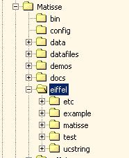
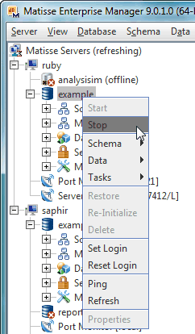
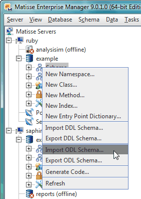

|
1. Before Starting with the Eiffel binding
If you are new to Matisse, we recommend you to take a
look at the
Getting Started with Matisse manual from Matisse web site.
This manual explains how to create and initialize a new database, how to define
a database schema, what is the typical development process
with Matisse, and more.
The Matisse Eiffel binding consists of a set of Eiffel classes that provides
persistence to Eiffel classes, and a C library that supports these classes.
The programmer's guide for the Eiffel binding can be obtained from the
Matisse Documentation page.
NOTE:
If you plan to develop a .NET Eiffel application with Eiffel for .NET Framework,
you may skip this version of the Matisse Eiffel binding and instead directly use the Matisse .NET binding.
The Matisse .NET binding allows you to create your own Eiffel class stubs generator using
the Eiffel CodeDOM provider. Please refer to Section 18 'Generating Class Stubs with a CodeDOM Provider'
of the Matisse .NET Programmer's Guide for more details.
2. Requirements
- Windows Vista/7/8, or Linux.
- Matisse 9.1.x or higher.
- EiffelStudio 7.0 or higher (Either GNU gcc compiler or Microsoft C/C++ complier).
- Check the MATISSE_HOME environment
variable. It should be set to the Matisse installation directory
(C:\Program Files\Matisse by default on Windows or
/usr/local/matisse by default on Linux).
- Review the RELEASE NOTES prior to compiling the binding.
3. Installation
In the following instructions, MATISSE_HOME refers to the top
directory of the Matisse installation (i.e. C:\Program Files\Matisse) and
$MATISSE_HOME\eiffel is the top directory of the Matisse Eiffel Binding.
3.1 Installing the binding
Extract the matisse-eiffel-9.x.x.zip file and save the files in the
$MATISSE_HOME directory. You'll see the following directory
tree:

3.2 Compiling the binding
3.2.1 Building the C support libraries on Windows with Microsoft C/C++ compiler
- Open a command line window
- Go to
%MATISSE_HOME%\eiffel\clib
- Clean up the directory
% del *.lib
- Build the libraries
% nmake /f makefile.msc
3.2.2 Building the C support libraries on Linux
- Open a terminal window
- Go to
$MATISSE_HOME/eiffel/clib
- Clean up the directory
% make -f makefile.linux clean
- Build the libraries
% make -f makefile.linux
4. Examples
This installation includes example programs for both Windows and Linux located in the
sub directories of $MATISSE_HOME\eiffel\examples:
- Be sure that your environment variable path includes
$MATISSE_HOME\bin.
- Start a new Matisse database using the Enterprise Manager.

- Import the database schema for the example into the the
database using the ODL file located in the example directory:

- Generate the Eiffel persistent classes using the command-line
utility in a sub directory of
$MATISSE_HOME\eiffel\examples:
% mt_sdl stubgen --lang eiffel -f example.odl
- Start the EiffelStudio and select the
example.ecf file.
- Compile and run the application.
NOTE: one of the sample routines shows how to handle a
Matisse run-time error, so the execution pauses and EiffelStudio shows
the developer exception. Then, click the Launch button to resume the
execution.
5. Documentation
6. New Features
For the information about the new Eiffel Binding features in this release,
please refer to the
Release Notes from the Matisse web site.
Appendix-1: How to generate Eiffel source code with mt_sdl
You can write your database schema in an ODL (Object Definition
Language) file, in SQL DDL, or in UML using Matisse Database modeler.
If you use UML or SQL to define your schema, you need to generate the corresponding
ODL file from the database. Using the ODL file, you can
generate the Eiffel source code that works as stub classes to manipulate persistent classes in the
database. For additional information, see the
Matisse ODL Programming Guide,
Matisse Database Modeler User's Guide,
Matisse SQL Language Reference.
To generate Eiffel source code from an ODL file, use the following command
(where dbschema.odl is the name of the ODL file containing your schema):
% mt_sdl stubgen --lang eiffel -f dbschema.odl
This generates Eiffel persistent class files in the directory where the command is executed.
Appendix-2: Unicode String Classes
The Matisse Eiffel binding requires a Unicode String classes. You may
use the UCSTRING classes from Gobo class libraries.
|